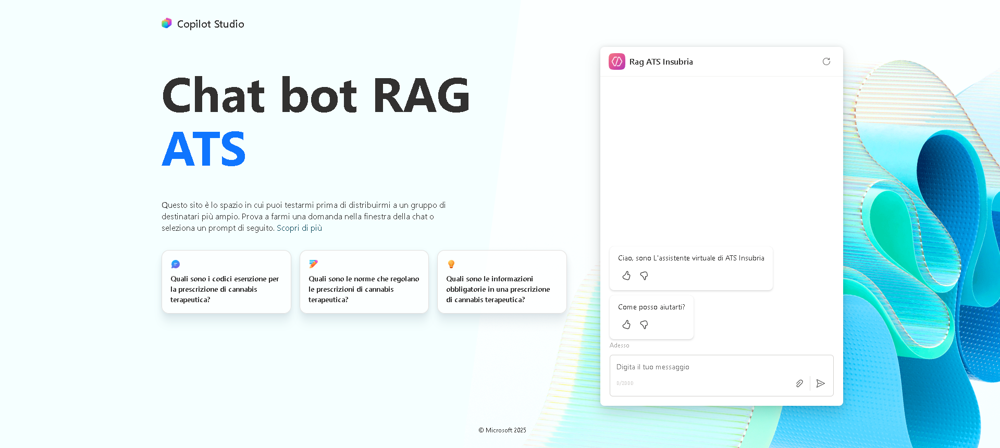
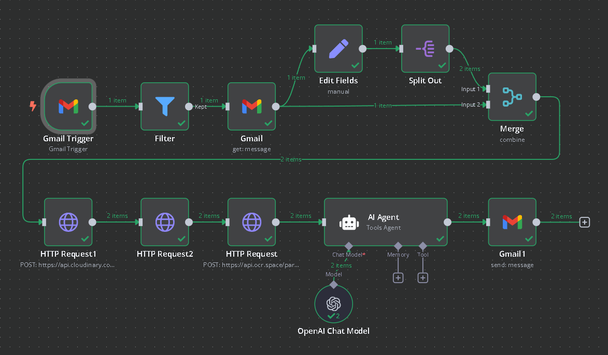

Featured

Project 1 - Copilot Studio
I worked on the design and development of a Retrieval-Augmented Generation (RAG) chatbot based on large language models, created to provide practical and reliable support to both internal operators and assisted users in navigating a large and heterogeneous document repository. The solution was developed using Microsoft Copilot Studio and focused on improving accessibility to information while maintaining clarity, consistency, and usability. The chatbot architecture was structured around three distinct automated flows, each with a specific responsibility within the conversational lifecycle. The first flow handled the initialization of the conversation, managing user greetings, context setup, and intent recognition. The second flow was dedicated to the core conversational logic, where user queries were processed, relevant documents were retrieved, and responses were generated using a RAG approach to ensure accurate and context-aware answers. A third fallback flow was implemented to manage ambiguous inputs, unsupported requests, or low-confidence scenarios, allowing the system to gracefully handle errors and guide the user toward clearer interactions. This modular design improved the robustness, maintainability, and scalability of the chatbot, while also reinforcing my experience in conversational system design, workflow orchestration, and the practical application of large language models in real-world, information-intensive environments.

Project 2 - N8N
I designed and implemented an automated OCR-based workflow aimed at extracting structured information from medical prescription documents and securely storing it in a PostgreSQL database. The entire pipeline was developed using n8n as the orchestration environment, enabling seamless integration between email services, cloud-based processing, external OCR APIs, and database systems. The workflow begins when a user submits a document by sending it to a dedicated bot email address. The attachment is automatically received and processed, then optimized through compression using Cloudinary to reduce file size while preserving readability. Once prepared, the document is sent to the OCR.Space service via structured POST and GET requests, where textual data is extracted from the image or PDF content. After extraction, the relevant information is parsed, validated, and stored in a PostgreSQL database for long-term archiving and retrieval. To complete the process, the system automatically sends a confirmation email via Gmail, notifying the user that the document has been successfully received, processed, and archived. This project strengthened my experience in workflow automation, API integration, asynchronous processing, and data persistence, while highlighting the importance of reliability and traceability in healthcare-related digital systems.
Academic
Project 1 - Online Handcraft e-commerce
I developed a full-stack e-commerce platform for handcrafted
products, featuring both customer and admin interfaces.
The platform integrates a PostgreSQL database hosted on AWS
to manage products, inventory, and user data. Customers can
browse the store, register accounts, and log in to make purchases,
while the admin interface allows authorized users to update
product listings, manage inventory, and monitor store activity.
Payment functionality is simulated through a Stripe integration,
allowing secure checkout and realistic testing of transactions.
The main page welcomes users with a clean and intuitive
interface, designed to provide a seamless shopping experience.
This project enhanced my skills in full-stack development,
database management, user authentication, and e-commerce
workflow design. The project was developed in VS code environment
using HTML, CSS and Javascript languages.
[View on GitHub]: Link to the project
Project 2 - My Audio
I developed an Android application using Kotlin in Android Studio
that functions as a versatile audio recording tool. The app
allows users to record audio clips and manage them in a
dedicated database, where each recording can be saved, deleted,
or edited in terms of length and name. Users can play back any
saved recording directly within the app, and a search feature
enables quick retrieval based on the recording’s name.
This project helped me strengthen my skills in mobile
development, database management, and user interface design,
while also giving me practical experience with Kotlin, Android
Studio, and handling multimedia data efficiently.
[View on GitHub]: Link to the project
Personal
Project 1 - Gourmet-restaurant
I created a website for a Korean restaurant, primarily using HTML
with some CSS for styling. The project includes a main page
presenting the restaurant, a dedicated menu page, and an ordering
page, allowing users to browse dishes and place orders.
This project helped me strengthen my skills in structuring
content with HTML, applying CSS for layout and styling, and
organizing multiple pages within a coherent website. It was
a practical introduction to web design and user-friendly
navigation.
[View on GitHub]: Link to the project
Project 2 - Personal-Site
This project consists of the personal portfolio website you are
currently viewing. It is built using HTML, CSS, and a bit of
JavaScript to create interactive elements such as a skills
carousel. The website includes an “About Me” section to present
my background, a “Projects” page to showcase my academic and
professional work, and a “Contact” page to allow users to get
in touch.
Developing this website allowed me to apply and integrate
front-end skills, experiment with layout, styling, and
interactivity, and gain experience in creating a modern,
responsive portfolio that clearly communicates both my
technical abilities and personal brand.
[View on GitHub]: Link to the project